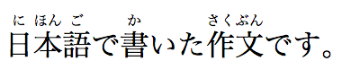
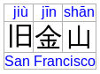

4.5. Text-level semantics
4.5.1. The a#elementdef-aReferenced in:1.9. A quick introduction to HTML (2) (3)2.7.2.1. The HTMLAllCollection interface3.1.3. DOM tree accessors (2)3.2.4.2.2. Flow content3.2.4.2.5. Phrasing content3.2.4.2.7. Interactive content3.2.4.2.8. Palpable content3.2.4.3. Transparent content models (2)3.2.4.4. Paragraphs (2) (3)3.2.5.4. The translate attribute4.2.4. The link element (2)4.2.6. The style element4.4.1. The p element4.5.1. The a element (2) (3) (4) (5) (6) (7) (8) (9) (10) (11)4.5.8. The dfn element (2)4.5.31. Usage summary4.7.5. The img element (2) (3)4.7.5.1.3. A link or button containing nothing but an image4.8.1. Introduction (2) (3)4.8.2. Links created by a and area elements (2) (3) (4) (5) (6) (7)4.8.3. API for a and area elements4.8.4. Following hyperlinks (2)4.8.5. Downloading resources (2)4.8.6. Link types (2)4.8.6.1. Link type "alternate" (2)4.8.6.2. Link type "author" (2) (3)4.8.6.3. Link type "bookmark"4.8.6.4. Link type "help" (2) (3)4.8.6.6. Link type "license"4.8.6.7. Link type "nofollow"4.8.6.8. Link type "noreferrer" (2)4.8.6.9. Link type "prefetch"4.8.6.10. Link type "search"4.8.6.12. Link type "tag"4.8.6.13.1. Link type "next"4.8.6.13.2. Link type "prev"4.8.6.14. Other link types (2) (3) (4) (5) (6)4.11.6.2. Using the a element to define a command (2)4.11.6.3. Using the button element to define a command4.13.3. Tag clouds4.13.5. Footnotes4.15.2. Pseudo-classes (2) (3) (4) (5)5.4.3. The tabindex attribute5.7.4. The DragEvent interface5.7.5. Drag-and-drop processing model (2)5.7.7. The draggable attribute6.2.4. Named access on the Window object (2)6.6.1. Navigating across documents6.6.9. Navigating to a fragment identifier7.2. Base64 utility methods8.1.2.4. Optional tags8.2.3.2. The stack of open elements8.2.5.1. Creating and inserting nodes8.2.5.4.7. The "in body" insertion mode (2) (3) (4) (5)11.1. Obsolete but conforming features (2)11.1.1. Warnings for obsolete but conforming features11.2. Non-conforming features (2) (3) (4) (5) (6) (7) (8) (9) (10)11.3.4. Other elements, attributes and APIs (2)Elements (2) (3) (4)Element content categories (2) (3) (4)Attributes (2) (3) (4) (5) (6)Element Interfaces element
- Categories:
- Flow content.
- Phrasing content.
- If the element has an
hrefattribute: Interactive content.- Palpable content.
- Phrasing content.
- Contexts in which this element can be used:
- Where phrasing content is expected.
- Content model:
- Transparent, but there must be no interactive content or
aelement descendants. - Tag omission in text/html:
- Neither tag is omissible
- Content attributes:
- Global attributes
href- Address of the hyperlinktarget- Default browsing context for hyperlink navigation and §4.10.22 Form submissiondownload- Whether to download the resource instead of navigating to it, and its file name if sorel- Relationship between the document containing the hyperlink and the destination resourcehreflang- Language of the linked resourcetype- Hint for the type of the referenced resource - Allowed ARIA role attribute values:
-
link(default - do not set),button,checkbox,menuitem,menuitemcheckbox,menuitemradio,tabortreeitem - Allowed ARIA state and property attributes:
- Global aria-* attributes
- Any
aria-*attributes applicable to the allowed roles. - Any
- DOM interface:
-
interface HTMLAnchorElement#htmlanchorelement-htmlanchorelementReferenced in:4.5.1. The a element11.3.4. Other elements, attributes and APIsElementsElement Interfaces : HTMLElement { attribute DOMString target; attribute DOMString download; attribute DOMString rel; attribute DOMString rev; readonly attribute DOMTokenList relList; attribute DOMString hreflang; attribute DOMString type; attribute DOMString text; }; HTMLAnchorElement implements HTMLHyperlinkElementUtils;
If the a element has an href attribute, then it represents a hyperlink (a hypertext anchor) labeled by its contents.
If the a element has no href attribute, then the element represents a placeholder for where a link might otherwise have been placed, if it had been
relevant, consisting of just the element’s contents.
The target, download, rel, hreflang, and type attributes must be omitted if the href attribute is not present.
If a site uses a consistent navigation toolbar on every page, then the link that would
normally link to the page itself could be marked up using an a element:
<nav> <ul> <li> <a href="/">Home</a> </li> <li> <a href="/news">News</a> </li> <li> <a>Examples</a> </li> <li> <a href="/legal">Legal</a> </li> </ul> </nav>
href, target, download, and attributes affect what
happens when users follow hyperlinks or download hyperlinks created using the a element. The rel, hreflang, and type attributes may be used to indicate to the user the likely nature of the target resource before
the user follows the link.
The activation behavior of a elements that create hyperlinks is to
run the following steps:
-
If the
aelement’sDocumentis not fully active, then abort these steps. -
If either the
aelement has adownloadattribute and the algorithm is not allowed to show a popup, or the element’stargetattribute is present and applying the rules for choosing a browsing context given a browsing context name, using the value of thetargetattribute as the browsing context name, would result in there not being a chosen browsing context, then run these substeps:-
If there is an entry settings object, throw an
InvalidAccessErrorexception. -
Abort these steps without following the hyperlink.
-
-
If the target of the
clickevent is animgelement with anismapattribute specified, then server-side image map processing must be performed, as follows:-
If the
clickevent was a real pointing-device-triggeredclickevent on theimgelement, then let x be the distance in CSS pixels from the left edge of the image’s left border, if it has one, or the left edge of the image otherwise, to the location of the click, and let y be the distance in CSS pixels from the top edge of the image’s top border, if it has one, or the top edge of the image otherwise, to the location of the click. Otherwise, let x and y be zero. -
Let hyperlink suffix be a U+003F QUESTION MARK character, the value of x expressed as a base-ten integer using ASCII digits, a U+002C COMMA character (,), and the value of y expressed as a base-ten integer using ASCII digits.
-
-
Finally, the user agent must follow the hyperlink or download the hyperlink created by the
aelement, as determined by thedownloadattribute and any expressed user preference, passing hyperlink suffix, if the steps above defined it.
- a .
text - Same as
textContent.
download#dom-htmlanchorelement-downloadReferenced in:4.5.1. The a element, ping, target#dom-htmlanchorelement-targetReferenced in:4.5.1. The a element, rel#dom-htmlanchorelement-relReferenced in:4.5.1. The a element, rev#dom-htmlanchorelement-revReferenced in:4.5.1. The a element11.3.4. Other elements, attributes and APIs (2), hreflang#dom-htmlanchorelement-hreflangReferenced in:4.5.1. The a element, and type#dom-htmlanchorelement-typeReferenced in:4.5.1. The a element, must reflect the
respective content attributes of the same name.
The IDL attribute relList#dom-htmlanchorelement-rellistReferenced in:4.5.1. The a element must reflect the rel content attribute.
The text#dom-htmlanchorelement-textReferenced in:4.5.1. The a element IDL attribute, on getting, must return the same value as the textContent IDL attribute on the element, and on setting, must act as if the textContent IDL attribute on the element had been set to the new value.
The a element also supports the HTMLHyperlinkElementUtils interface. [URL]
When the element is created, and whenever the element’s href content attribute is
set, changed, or removed, the user agent must invoke the element’s HTMLHyperlinkElementUtils interface’s set the input algorithm with the value of the href content
attribute, if any, or the empty string otherwise, as the given value.
The element’s HTMLHyperlinkElementUtils interface’s get the base algorithm must simply return
the document base URL.
The element’s HTMLHyperlinkElementUtils interface’s query encoding is the document’s character encoding.
When the element’s HTMLHyperlinkElementUtils interface invokes its update steps with a string value, the user agent must set the element’s href content attribute to
the string value.
a element may be wrapped around entire paragraphs, lists, tables, and so forth,
even entire sections, so long as there is no interactive content within (e.g., buttons or other
links). This example shows how this can be used to make an entire advertising block into a link:
<aside class="advertising"> <h1>Advertising</h1> <a href="http://ad.example.com/?adid=1929&pubid=1422"> <section> <h1>Mellblomatic 9000!</h1> <p>Turn all your widgets into mellbloms!</p> <p>Only $9.99 plus shipping and handling.</p> </section> </a> <a href="http://ad.example.com/?adid=375&pubid=1422"> <section> <h1>The Mellblom Browser</h1> <p>Web browsing at the speed of light.</p> <p>No other browser goes faster!</p> </section> </a> </aside>
4.5.2. The em#elementdef-emReferenced in:3.2.4.2.2. Flow content3.2.4.2.5. Phrasing content3.2.4.2.8. Palpable content4.5.2. The em element (2) (3) (4)4.5.4. The small element4.5.22. The i element4.5.23. The b element4.5.24. The u element4.5.25. The mark element4.5.31. Usage summary8.2.3.2. The stack of open elementsElementsElement content categories (2) (3)Element Interfaces element
- Categories:
- Flow content.
- Phrasing content.
- Palpable content.
- Phrasing content.
- Contexts in which this element can be used:
- Where phrasing content is expected.
- Content model:
- Phrasing content.
- Tag omission in text/html:
- Neither tag is omissible
- Content attributes:
- Global attributes
- Allowed ARIA role attribute values:
- Any role value.
- Allowed ARIA state and property attributes:
- Global aria-* attributes
- Any
aria-*attributes applicable to the allowed roles. - Any
- DOM interface:
- Uses
HTMLElement.
The em element represents stress emphasis of its contents.
The level of stress that a particular piece of content has is given by its number of ancestor em elements.
The placement of stress emphasis changes the meaning of the sentence. The element thus forms an integral part of the content. The precise way in which stress is used in this way depends on the language.
<p>Cats are cute animals.</p>
By emphasizing the first word, the statement implies that the kind of animal under discussion is in question (maybe someone is asserting that dogs are cute):
<p><em>Cats</em> are cute animals.</p>
Moving the stress to the verb, one highlights that the truth of the entire sentence is in question (maybe someone is saying cats are not cute):
<p>Cats <em>are</em> cute animals.</p>
By moving it to the adjective, the exact nature of the cats is reasserted (maybe someone suggested cats were mean animals):
<p>Cats are <em>cute</em> animals.</p>
Similarly, if someone asserted that cats were vegetables, someone correcting this might emphasize the last word:
<p>Cats are cute <em>animals</em>.</p>
By emphasizing the entire sentence, it becomes clear that the speaker is fighting hard to get the point across. This kind of stress emphasis also typically affects the punctuation, hence the exclamation mark here.
<p><em>Cats are cute animals!</em></p>
Anger mixed with emphasizing the cuteness could lead to markup such as:
<p><em>Cats are <em>cute</em> animals!</em></p>
em element isn’t a generic "italics" element. Sometimes, text is intended to
stand out from the rest of the paragraph, as if it was in a different mood or voice. For this,
the i element is more appropriate.
The em element also isn’t intended to convey importance; for that purpose, the strong element is more appropriate.
4.5.3. The strong#elementdef-strongReferenced in:3.2.4.2.2. Flow content3.2.4.2.5. Phrasing content3.2.4.2.8. Palpable content4.5.2. The em element4.5.3. The strong element (2) (3) (4) (5) (6) (7) (8) (9) (10)4.5.4. The small element4.5.23. The b element (2)4.5.31. Usage summary8.2.3.2. The stack of open elements11.2. Non-conforming featuresElementsElement content categories (2) (3)Element Interfaces element
- Categories:
- Flow content.
- Phrasing content.
- Palpable content.
- Phrasing content.
- Contexts in which this element can be used:
- Where phrasing content is expected.
- Content model:
- Phrasing content.
- Tag omission in text/html:
- Neither tag is omissible
- Content attributes:
- Global attributes
- Allowed ARIA role attribute values:
- Any role value.
- Allowed ARIA state and property attributes:
- Global aria-* attributes
- Any
aria-*attributes applicable to the allowed roles. - Any
- DOM interface:
- Uses
HTMLElement.
The strong element represents strong importance, seriousness, or
urgency for its contents.
Importance: The strong element can be used in a heading, caption,
or paragraph to distinguish the part that really matters from other parts that might be more
detailed, more jovial, or merely boilerplate.
For example, the first word of the previous paragraph is marked up with strong to distinguish it from the more detailed text in the rest of the
paragraph.
Seriousness: The strong element can be used to mark up a warning
or caution notice.
Urgency: The strong element can be used to denote contents that
the user needs to see sooner than other parts of the document.
The relative level of importance of a piece of content is given by its number of ancestor strong elements; each strong element increases the importance of its
contents.
Changing the importance of a piece of text with the strong element does not change
the meaning of the sentence.
strong:
<h1>Chapter 1: <strong>The Praxis</strong></h1>
In the following example, the name of the diagram in the caption is marked up with strong, to distinguish it from boilerplate text (before) and the description
(after):
<figcaption>Figure 1. <strong>Ant colony dynamics</strong>. The ants in this colony areaffected by the heat source (upper left) and the food source (lower right).</figcaption>
In this example, the heading is really "Flowers, Bees, and Honey", but the author has added a
light-hearted addition to the heading. The strong element is thus used to mark up
the first part to distinguish it from the latter part.
<h1><strong>Flowers, Bees, and Honey</strong> and other things I don’t understand</h1>
<p><strong>Warning.</strong> This dungeon is dangerous. <strong>Avoid the ducks.</strong> Take any gold you find. <strong><strong>Do not take any of the diamonds</strong>, they are explosive and <strong>will destroy anything within ten meters.</strong></strong> You have been warned.</p>
strong element is used to denote the part of the text that
the user is intended to read first.
<p>Welcome to Remy, the reminder system.</p> <p>Your tasks for today:</p> <ul> <li><p><strong>Turn off the oven.</strong></p></li> <li><p>Put out the trash.</p></li> <li><p>Do the laundry.</p></li> </ul>
4.5.4. The small#elementdef-smallReferenced in:1.10.1. Presentational markup3.2.4.2.2. Flow content3.2.4.2.5. Phrasing content3.2.4.2.8. Palpable content4.5.4. The small element (2) (3) (4) (5) (6) (7)4.5.31. Usage summary8.2.3.2. The stack of open elementsElementsElement content categories (2) (3)Element Interfaces element
- Categories:
- Flow content.
- Phrasing content.
- Palpable content.
- Phrasing content.
- Contexts in which this element can be used:
- Where phrasing content is expected.
- Content model:
- Phrasing content.
- Tag omission in text/html:
- Neither tag is omissible
- Content attributes:
- Global attributes
- Allowed ARIA role attribute values:
- Any role value.
- Allowed ARIA state and property attributes:
- Global aria-* attributes
- Any
aria-*attributes applicable to the allowed roles. - Any
- DOM interface:
- Uses
HTMLElement.
The small element represents side comments such as small print.
Small print typically features disclaimers, caveats, legal restrictions, or copyrights. Small print is also sometimes used for attribution, or for satisfying licensing requirements.
The small element does not "de-emphasize" or lower the importance of text
emphasized by the em element or marked as important with the strong element. To mark text as not emphasized or important, simply do not mark it up with the em or strong elements respectively.
The small element should not be used for extended spans of text, such as multiple
paragraphs, lists, or sections of text. It is only intended for short runs of text. The text of a
page listing terms of use, for instance, would not be a suitable candidate for the small element: in such a case, the text is not a side comment, it is the main content
of the page.
small element is used to indicate that value-added tax is
not included in a price of a hotel room:
<dl> <dt>Single room <dd>199 € <small>breakfast included, VAT not included</small> <dt>Double room <dd>239 € <small>breakfast included, VAT not included</small> </dl>
small element is used for a side comment in an article.
<p>Example Corp today announced record profits for the second quarter <small>(Full Disclosure: Foo News is a subsidiary of Example Corp)</small>, leading to speculation about a third quarter merger with Demo Group.</p>
This is distinct from a sidebar, which might be multiple paragraphs long and is removed from the main flow of text. In the following example, we see a sidebar from the same article. This sidebar also has small print, indicating the source of the information in the sidebar.
<aside> <h1>Example Corp</h1> <p>This company mostly creates small software and Web sites.</p> <p>The Example Corp company mission is "To provide entertainment and news on a sample basis".</p> <p><small>Information obtained from <a href="http://example.com/about.html">example.com</a> home page.</small></p> </aside>
In this last example, the small element is marked as being important small print.
<p><strong><small>Continued use of this service will result in a kiss.</small></strong></p>
4.5.5. The s#elementdef-sReferenced in:1.10.1. Presentational markup3.2.4.2.2. Flow content3.2.4.2.5. Phrasing content3.2.4.2.8. Palpable content4.5.5. The s element (2)4.5.31. Usage summary8.2.3.2. The stack of open elementsElementsElement content categories (2) (3)Element Interfaces element
- Categories:
- Flow content.
- Phrasing content.
- Palpable content.
- Phrasing content.
- Contexts in which this element can be used:
- Where phrasing content is expected.
- Content model:
- Phrasing content.
- Tag omission in text/html:
- Neither tag is omissible
- Content attributes:
- Global attributes
- Allowed ARIA role attribute values:
- Any role value.
- Allowed ARIA state and property attributes:
- Global aria-* attributes
- Any
aria-*attributes applicable to the allowed roles. - Any
- DOM interface:
- Uses
HTMLElement.
The s element represents contents that are no longer accurate or no longer
relevant.
The s element is not appropriate when indicating document edits; to mark a span of
text as having been removed from a document, use the del element.
<p>Buy our Iced Tea and Lemonade!</p> <p><s>Recommended retail price: $3.99 per bottle</s></p> <p><strong>Now selling for just $2.99 a bottle!</strong></p>
4.5.6. The cite#elementdef-citeReferenced in:3.2.1. Semantics3.2.4.2.2. Flow content3.2.4.2.5. Phrasing content3.2.4.2.8. Palpable content4.4.4. The blockquote element (2) (3) (4)4.5.6. The cite element (2) (3) (4) (5) (6) (7) (8)4.5.24. The u element4.5.31. Usage summary10.7.1. Links, forms, and navigationElementsElement content categories (2) (3)Element Interfaces element
- Categories:
- Flow content.
- Phrasing content.
- Palpable content.
- Phrasing content.
- Contexts in which this element can be used:
- Where phrasing content is expected.
- Content model:
- Phrasing content.
- Tag omission in text/html:
- Neither tag is omissible
- Content attributes:
- Global attributes
- Allowed ARIA role attribute values:
- Any role value.
- Allowed ARIA state and property attributes:
- Global aria-* attributes
- Any
aria-*attributes applicable to the allowed roles. - Any
- DOM interface:
- Uses
HTMLElement.
The cite element represents a reference to a creative work. It must include
the title of the work or the name of the author(person, people or organization) or an URL
reference, or a reference in abbreviated form as per the conventions used for the addition of
citation metadata.
Creative works include a book, a paper, an essay, a poem, a score, a song, a script, a film, a TV show, a game, a sculpture, a painting, a theatre production, a play, an opera, a musical, an exhibition, a legal case report, a computer program, , a web site, a web page, a blog post or comment, a forum post or comment, a tweet, a written or oral statement, etc.
cite element:
<p>In the words of <cite>Charles Bukowski</cite> - <q>An intellectual says a simple thing in a hard way. An artist says a hard thing in a simple way.</q></p>
cite element:
<blockquote class="twitter-tweet"> <p>♥ Bukowski in <a href="https://twitter.com/search?q=%23HTML5&src=hash">#HTML5</a> spec examples <a href="http://t.co/0FIEiYN1pC">http://t.co/0FIEiYN1pC</a></p><cite>— karl dubost (@karlpro) <a href="https://twitter.com/karlpro/statuses/370905307293442048">August 23, 2013</a></cite> </blockquote>
cite element is used to reference the title of a work in a
bibliography:
<p><cite>Universal Declaration of Human Rights</cite>, United Nations, December 1948. Adopted by General Assembly resolution 217 A (III).</p>
cite element is used to reference the title of a television
show:
<p>Who is your favorite doctor (in <cite>Doctor Who</cite>)?</p>
cite element is to identify the author of a comment in a
blog post or forum, as in this example:
<article id="comment-1"> Comment by <cite><a href="http://oli.jp">Oli Studholme</a></cite> <time datetime="2013-08-19T16:01">August 19th, 2013 at 4:01 pm</time> <p>Unfortunately I don’t think adding names back into the definition of <code>cite</code> solves the problem: of the 12 blockquote examples in <a href="http://oli.jp/example/blockquote-metadata/">Examples of block quote metadata</a>, there’s not even one that’s <em>just</em> a person’s name.</p> <p>A subset of the problem, maybe…</p> </article>
cite element is to reference the URL of a search result, as in this example:
<div id="resultStats">About 416,000,000 results 0.33 seconds) </div> ... <p><a href="http://www.w3.org/html/wg/">W3C <i>HTML Working Group</i></a></p> <p><cite>www.w3.org/<b>html</b>/wg/</cite></p> <p>15 Apr 2013 - The <i>HTML Working Group</i> is currently chartered to continue its work through 31 December 2014. A Plan 2014 document published by the...</p> ...
cite element is used to identify an abbreviated reference such as Ibid. it is suggested that this reference be linked to the base reference:
<article> <h2>Book notes</h2> ... ... <blockquote>"Money is the real cause of poverty," <footer> <cite id="baseref">The Ragged-Trousered Philanthropists, page 89.</cite> </footer> </blockquote> ... ... <blockquote>"Money is the cause of poverty because it is the device by which those who are too lazy to work are enabled to rob the workers of the fruits of their labour." <a href="#baseref"><cite>Ibid.</cite></a> </blockquote> ... </article>
A citation is not a quote (for which the q element is
appropriate).
cite is not for quotes:
<p><cite>This is wrong!, said Hillary.</cite> is a quote from the popular daytime TV drama When Ian became Hillary.</p>
This is an example of the correct usage:
<p><q>This is correct, said Hillary.</q> is a quote from the popular daytime TV drama <cite>When Ian became Hillary</cite>.</p>
4.5.7. The q#elementdef-qReferenced in:2.5.3. Dynamic changes to base URLs3.2.4.2.2. Flow content3.2.4.2.5. Phrasing content3.2.4.2.8. Palpable content4.4.4. The blockquote element4.5.6. The cite element4.5.7. The q element (2) (3) (4) (5) (6) (7) (8) (9) (10) (11)4.5.31. Usage summary10.7.1. Links, forms, and navigationElementsElement content categories (2) (3)AttributesElement Interfaces element
- Categories:
- Flow content.
- Phrasing content.
- Palpable content.
- Phrasing content.
- Contexts in which this element can be used:
- Where phrasing content is expected.
- Content model:
- Phrasing content.
- Tag omission in text/html:
- Neither tag is omissible
- Content attributes:
- Global attributes
cite- Link to the source of the quotation or more information about the edit - Allowed ARIA role attribute values:
- Any role value.
- Allowed ARIA state and property attributes:
- Global aria-* attributes
- Any
aria-*attributes applicable to the allowed roles. - Any
- DOM interface:
- Uses
HTMLQuoteElement.
The q element represents some phrasing content quoted from another
source.
Quotation punctuation (such as quotation marks) that is quoting the contents of the element must
not appear immediately before, after, or inside q elements; they will be inserted
into the rendering by the user agent.
Content inside a q element must be quoted from another source, whose address, if it
has one, may be cited in the cite#element-attrdef-q-citeReferenced in:Elements attribute. The source may be fictional,
as when quoting characters in a novel or screenplay.
If the cite attribute is present, it must be a valid URL potentially surrounded by spaces. To obtain the corresponding
citation link, the value of the attribute must be resolved relative to the element. User agents may allow users to follow such citation links, but they are primarily intended for
private use (e.g., by server-side scripts collecting statistics about a site’s use of quotations),
not for readers.
The q element must not be used in place of quotation marks that do not represent
quotes; for example, it is inappropriate to use the q element for marking up
sarcastic statements.
The use of q elements to mark up quotations is entirely optional; using explicit
quotation punctuation without q elements is just as correct.
q element:
<p>The man said <q>Things that are impossible just take longer</q>. I disagreed with him.</p>
q element, and an
explicit citation outside:
<p>The W3C page <cite>About W3C</cite> says the W3C’s mission is <q cite="http://www.w3.org/Consortium/">To lead the World Wide Web to its full potential by developing protocols and guidelines that ensure long-term growth for the Web</q>. I disagree with this mission.</p>
<p>In <cite>Example One</cite>, he writes <q>The man said <q>Things that are impossible just take longer</q>. I disagreed with him</q>. Well, I disagree even more!</p>
q element:
<p>His best argument was ❝I disagree❞, which I thought was laughable.</p>
q element in this case would be inappropriate.
<p>The word "ineffable" could have been used to describe the disaster resulting from the campaign’s mismanagement.</p>
4.5.8. The dfn#elementdef-dfnReferenced in:3.2.4.2.2. Flow content3.2.4.2.5. Phrasing content3.2.4.2.8. Palpable content3.2.5.2. The title attribute4.4.10. The dd element4.5.8. The dfn element (2) (3) (4) (5) (6) (7) (8) (9) (10)4.5.22. The i element4.5.31. Usage summaryElementsElement content categories (2) (3)AttributesElement Interfaces element
- Categories:
- Flow content.
- Phrasing content.
- Palpable content.
- Phrasing content.
- Contexts in which this element can be used:
- Where phrasing content is expected.
- Content model:
- Phrasing content, but there must be no
dfnelement descendants. - Tag omission in text/html:
- Neither tag is omissible
- Content attributes:
- Global attributes
- Also, the
titleattribute has special semantics on this element. - Also, the
- Allowed ARIA role attribute values:
- Any role value.
- Allowed ARIA state and property attributes:
- Global aria-* attributes
- Any
aria-*attributes applicable to the allowed roles. - Any
- DOM interface:
- Uses
HTMLElement.
The dfn element represents the defining instance of a term. The paragraph, description list group, or section that is the nearest ancestor of
the dfn element must also contain the definition(s) for the term given by the dfn element.
Defining term#defines-the-termReferenced in:4.5.8. The dfn element4.5.9. The abbr element: If the dfn element has a title attribute, then the exact value of that attribute is the term being defined. Otherwise, if it
contains exactly one element child node and no child Text nodes, and that child
element is an abbr element with a title attribute, then the exact value
of that attribute is the term being defined. Otherwise, it is the exact textContent of the dfn element that gives the term being defined.
If the title attribute of the dfn element is present, then it must
contain only the term being defined.
The title attribute of ancestor elements does not affect dfn elements.
An a element that links to a dfn element represents an instance of the
term defined by the dfn element.
<p>The <dfn><abbr title="Garage Door Opener">GDO</abbr></dfn> is a device that allows off-world teams to open the iris.</p> <!-- ... later in the document: --> <p>Teal’c activated his <abbr title="Garage Door Opener">GDO</abbr> and so Hammond ordered the iris to be opened.</p>
With the addition of an a element, the reference can be made explicit:
<p>The <dfn id=gdo><abbr title="Garage Door Opener">GDO</abbr></dfn> is a device that allows off-world teams to open the iris.</p> <!-- ... later in the document: --> <p>Teal’c activated his <a href=#gdo><abbr title="Garage Door Opener">GDO</abbr></a> and so Hammond ordered the iris to be opened.</p>
4.5.9. The abbr#elementdef-abbrReferenced in:3.2.4.2.2. Flow content3.2.4.2.5. Phrasing content3.2.4.2.8. Palpable content3.2.5.2. The title attribute (2)4.5.8. The dfn element4.5.9. The abbr element (2) (3) (4) (5) (6)4.5.31. Usage summary11.2. Non-conforming featuresElementsElement content categories (2) (3)Attributes (2)Element Interfaces element
- Categories:
- Flow content.
- Phrasing content.
- Palpable content.
- Phrasing content.
- Contexts in which this element can be used:
- Where phrasing content is expected.
- Content model:
- Phrasing content.
- Tag omission in text/html:
- Neither tag is omissible
- Content attributes:
- Global attributes
- Also, the
titleattribute has special semantics on this element. - Also, the
- Allowed ARIA role attribute values:
- Any role value.
- Allowed ARIA state and property attributes:
- Global aria-* attributes
- Any
aria-*attributes applicable to the allowed roles. - Any
- DOM interface:
- Uses
HTMLElement.
The abbr element represents an abbreviation or acronym, optionally with its
expansion. The title attribute may be used to provide an expansion of the
abbreviation. The attribute, if specified, must contain an expansion of the abbreviation, and
nothing else.
abbr element.
This paragraph defines the term "Web Hypertext Application
Technology Working Group".
<p>The <dfn id=whatwg><abbr title="Web Hypertext Application Technology Working Group">WHATWG</abbr></dfn> is a loose unofficial collaboration of Web browser manufacturers and interested parties who wish to develop new technologies designed to allow authors to write and deploy Applications over the World Wide Web.</p>
An alternative way to write this would be:
<p>The <dfn id=whatwg>Web Hypertext Application Technology Working Group</dfn> (<abbr title="Web Hypertext Application Technology Working Group">WHATWG</abbr>) is a loose unofficial collaboration of Web browser manufacturers and interested parties who wish to develop new technologies designed to allow authors to write and deploy Applications over the World Wide Web.</p>
abbr element.
<p>The <abbr title="Web Hypertext Application Technology Working Group">WHATWG</abbr> started working on HTML5 in 2004.</p>
<p>The <a href="#whatwg"><abbr title="Web Hypertext Application Technology Working Group">WHATWG</abbr></a> community does not have much representation from Asia.</p>
<p>Philip and Dashiva both denied that they were going to get the issue counts from past revisions of the specification to backfill the <abbr>WHATWG</abbr> issue graph.</p>
If an abbreviation is pluralized, the expansion’s grammatical number (plural vs singular) must match the grammatical number of the contents of the element.
<p>Two <abbr title="Working Group">WG</abbr>s worked on this specification: the <abbr>WHATWG</abbr> and the <abbr>HTMLWG</abbr>.</p>
Here the plural is inside the element, so the expansion is in the plural:
<p>Two <abbr title="Working Groups">WGs</abbr> worked on this specification: the <abbr>WHATWG</abbr> and the <abbr>HTMLWG</abbr>.</p>
Abbreviations do not have to be marked up using this element. It is expected to be useful in the following cases:
-
Abbreviations for which the author wants to give expansions, where using the
abbrelement with atitleattribute is an alternative to including the expansion inline (e.g., in parentheses). -
Abbreviations that are likely to be unfamiliar to the document’s readers, for which authors are encouraged to either mark up the abbreviation using an
abbrelement with atitleattribute or include the expansion inline in the text the first time the abbreviation is used. -
Abbreviations whose presence needs to be semantically annotated, e.g., so that they can be identified from a style sheet and given specific styles, for which the
abbrelement can be used without atitleattribute.
Providing an expansion in a title attribute once will not necessarily cause other abbr elements in the same document with the same contents but without a title attribute to behave as if they had the same expansion. Every abbr element is independent.
4.5.10. The ruby#elementdef-rubyReferenced in:3.2.4.2.2. Flow content3.2.4.2.5. Phrasing content3.2.4.2.8. Palpable content3.2.4.3. Transparent content models (2)4.5.10. The ruby element (2) (3) (4) (5) (6) (7) (8)4.5.11. The rb element (2) (3)4.5.12. The rt element (2) (3) (4)4.5.13. The rtc element (2) (3) (4) (5)4.5.14. The rp element4.5.24. The u element4.5.31. Usage summary4.12.3. The template element8.2.5.4.7. The "in body" insertion mode11.2. Non-conforming features (2)Elements (2) (3) (4) (5)Element content categories (2) (3)Element Interfaces element
- Categories:
- Flow content.
- Phrasing content.
- Palpable content.
- Phrasing content.
- Contexts in which this element can be used:
- Where phrasing content is expected.
- Content model:
- See prose.
- Tag omission in text/html:
- Neither tag is omissible
- Content attributes:
- Global attributes
- Allowed ARIA role attribute values:
- Any role value.
- Allowed ARIA state and property attributes:
- Global aria-* attributes
- Any
aria-*attributes applicable to the allowed roles. - Any
- DOM interface:
- Uses
HTMLElement.
The ruby element allows one or more spans of phrasing content to be marked with ruby
annotations. Ruby annotations are short runs of text presented alongside base text, primarily
used in East Asian typography as a guide for pronunciation or to include other annotations. In
Japanese, this form of typography is also known as furigana. Ruby text can appear on either
side, and sometimes both sides, of the base text, and it is possible to control its position using
CSS. A more complete introduction to ruby can be found in the Use Cases & Exploratory
Approaches for Ruby Markup document as well as in CSS Ruby Module Level 1. [RUBY-UC] [CSS3-RUBY]
The content model of ruby elements consists of one or more of the following sequences:
-
One or more phrasing content nodes or
rbelements. -
One or more
rtorrtcelements, each of which either immediately preceded or followed by anrpelements.
The ruby, rb, rtc, and rt elements can be used
for a variety of kinds of annotations, including in particular (though by no means limited to)
those described below. For more details on Japanese Ruby in particular, and how to render Ruby for
Japanese, see Requirements for Japanese Text Layout. [JLREQ] The rp element can be used as fallback content when ruby rendering is not supported.
-
Mono-ruby for individual base characters
-
Annotations (the ruby text) are associated individually with each ideographic character (the base text). In Japanese this is typically hiragana or katakana characters used to provide readings of kanji characters.
When no
rbelement is used, the base is implied, as above. But you can also make it explicit. This can be useful notably for styling, or when consecutive bases are to be treated as a group, as in the jukugo ruby example further down.In the following example, notice how each annotation corresponds to a single base character.
<ruby>日<rt>に</rt></ruby><ruby>本<rt>ほん</rt></ruby> <ruby>語<rt>ご</rt></ruby>で<ruby>書<rt>か</rt></ruby> いた<ruby>作<rt>さく</rt></ruby><ruby>文<rt>ぶん</rt></ruby>です。
Ruby text interspersed in regular text provides structure akin to the following image:

This example can also be written as follows, using one
rubyelement with two segments of base text and two annotations (one for each) rather than two back-to-backrubyelements each with one base text segment and annotation (as in the markup above):<ruby>日<rt>に</rt>本<rt>ほん</rt>語<rt>ご</rt></ruby> で<ruby>書<rt>か</rt></ruby> いた<ruby>作<rt>さく</rt>文<rt>ぶん</rt></ruby>です。
-
Group ruby
-
Group ruby is often used where phonetic annotations don’t map to discreet base characters, or for semantic glosses that span the whole base text. For example, the word "today" is written with the characters 今日, literally "this day". But it’s pronounced きょう (kyou), which can’t be broken down into a "this" part and a "day" part. In typical rendering, you can’t split text that is annotated with group ruby; it has to wrap as a single unit onto the next line. When a ruby text annotation maps to a base that is comprised of more than one character, then that base is grouped.
The following group ruby:

Can be marked up as follows:
-
Jukugo ruby
-
Jukugo refers to a Japanese compound noun, i.e., a word made up of more than one kanji character. Jukugo ruby is a term that is used not to describe ruby annotations over jukugo text, but rather to describe ruby with a behavior slightly different from mono or group ruby. Jukugo ruby is similar to mono ruby, in that there is a strong association between ruby text and individual base characters, but the ruby text is typically rendered as grouped together over multiple ideographs when they are on the same line.
The distinction is captured in this example:

Which can be marked up as follows:
In this example, each
rtelement is paired with its respectiverbelement, the difference with an interleavedrb/rtapproach being that the sequences of both base text and ruby annotations are implicitly placed in common containers so that the grouping information is captured.For more details on Jukugo Ruby rendering, see Appendix F in the Requirements for Japanese Text Layout and Use Case C: Jukugo ruby in the Use Cases & Exploratory Approaches for Ruby Markup. [JLREQ] [RUBY-UC]
-
Inline ruby
-
In some contexts, for instance when the font size or line height are too small for ruby to be readable, it is desirable to inline the ruby annotation such that it appears in parentheses after the text it annotates. This also provides a convenient fallback strategy for user agents that do not support rendering ruby annotations.
Inlining takes grouping into account. For example, Tokyo is written with two kanji characters, 東, which is pronounced とう, and 京, which is pronounced きょう. Each base character should be annotated individually, but the fallback should be 東京(とうきょう) not 東(とう)京(きょう). This can be marked up as follows:
Note that the above markup will enable the usage of parentheses when inlining for browsers that support ruby layout, but for those that don’t it will fail to provide parenthetical fallback. This is where the
rpelement is useful. It can be inserted into the above example to provide the appropriate fallback when ruby layout is not supported:
-
-
Text with both phonetic and semantic annotations (double-sided ruby)
-
Sometimes, ruby can be used to annotate a base twice.
In the following example, the Chinese word for San Francisco (旧金山, i.e., "old gold mountain") is annotated both using pinyin to give the pronunciation, and with the original English.

Which is marked up as follows:
In this example, a single base run of three base characters is annotated with three pinyin ruby text segments in a first (implicit) container, and an
rtcelement is introduced in order to provide a second single ruby text annotation being the city’s English name.We can also revisit our jukugo example above with 上手 ("skill") to show how it can be annotation in both kana and romaji phonetics while at the same time maintaining the pairing to bases and annotation grouping information.

Which is marked up as follows:
Text that is a direct child of the
rtcelement implicitly produces a ruby text segment as if it were contained in anrtelement. In this contrived example, this is shown with some symbols that are given names in English and French with annotations intended to appear on either side of the base symbol.<ruby> ♥<rt>Heart<rtc lang=fr>Cœur</rtc> ☘<rt>Shamrock<rtc lang=fr>Trèfle</rtc> ✶<rt>Star<rtc lang=fr>Étoile </ruby>
Similarly, text directly inside a
rubyelement implicitly produces a ruby base as if it were contained in anrbelement, andrtchildren ofrubyare implicitly contained in anrtccontainer. In effect, the above example is equivalent (in meaning, though not in the DOM it produces) to the following:
-
Zero or more ruby bases#ruby-basesReferenced in:4.5.10. The ruby element (2) (3) (4) (5), each of which is a DOM range that may contain phrasing content or an
rbelement. -
A base range, that is a DOM range including all the bases. This is the ruby base container#ruby-base-containerReferenced in:4.5.10. The ruby element (2) (3).
-
Zero or more ruby text containers which may correspond to explicit
rtcelements, or to sequences ofrtelements implicitly recognized as contained in an anonymous ruby text container.
Each ruby text container#ruby-text-containerReferenced in:4.5.10. The ruby element (2) (3) (4) (5) (6)4.5.13. The rtc element is described by zero or more ruby text annotations#ruby-text-annotationsReferenced in:4.5.10. The ruby element (2) (3) (4) (5) (6) each of which is a DOM range that may contain phrasing content
or an rt element, and an annotations range that is a range including all the
annotations for that container. A ruby text container is also known (primarily in a CSS
context) as a ruby annotation container#ruby-annotation-containerReferenced in:4.5.10. The ruby element (2) (3) (4) (5) (6) (7) (8).
Furthermore, a ruby element contains ignored ruby content. Ignored ruby content does
not form part of the document’s semantics. It consists of some inter-element whitespace and rp elements, the latter of which are used for legacy user agents that do not
support ruby at all.
The process of annotation pairing associates ruby annotations with ruby bases. Within each ruby segment, each ruby base in the ruby base container is paired with one ruby text annotation from the ruby text container, in order. If there are not enough ruby text annotations in a ruby annotation container, the last one is associated with any excess ruby bases. (If there are not any in the ruby annotation container, an anonymous empty one is assumed to exist.) If there are not enough ruby bases, any remaining ruby text annotations are assumed to be associated with empty, anonymous bases inserted at the end of the ruby base container.
Note that the terms ruby segment, ruby base, ruby text annotation, ruby text container, ruby base container, and ruby annotation container have their equivalents in CSS Ruby Module Level 3. [CSS3-RUBY]
Informally, the segmentation and categorisation algorithm below performs a simple set of
tasks. First it processes adjacent rb elements, text nodes, and non-ruby
elements into a list of bases. Then it processes any number of rtc elements or
sequences of rt elements that are considered to automatically map to an
anonymous ruby text container. Put together these data items form a ruby
segment as detailed in the data model above. It will continue to produce such segments
until it reaches the end of the content of a given ruby element. The complexity
of the algorithm below compared to this informal description stems from the need to support
an author-friendly syntax and being mindful of inter-element white space.
At any particular time, the segmentation and categorisation of content of a ruby element is the result that would be obtained from running the following
algorithm:
- Let root be the
rubyelement for which the algorithm is being run. - Let index be 0.
- Let ruby segments be an empty list.
- Let current bases be an empty list of DOM ranges.
- Let current bases range be null.
- Let current bases range start be null.
- Let current annotations be an empty list of DOM ranges.
- Let current annotations range be null.
- Let current annotations range start be null.
- Let current annotation containers be an empty list.
- Let current automatic base nodes be an empty list of DOM Nodes.
- Let current automatic base range start be null.
- Process a ruby child: If index is equal to or greater than the number of child nodes in root, then run the steps to commit a ruby segment, return ruby segments, and abort these steps.
- Let current child be the indexth node in root.
- If current child is not a Text node and is not an
Elementnode, then increment index by one and jump to the step labelled process a ruby child. - If current child is an
rpelement, then increment index by one and jump to the step labelled process a ruby child. (Note that this has the effect of including this element in any range that we are currently processing. This is done intentionally so that misplacedrpcan be processed correctly; semantically they are ignored all the same.) -
If current child is an
rtelement, then run these substeps:- Run the steps to commit an automatic base.
- Run the steps to commit the base range.
- If current annotations is empty, set current annotations range start to the value of index.
- Create a new DOM range whose start is the boundary point (root, index) and whose end is the boundary point (root, index plus one), and append it at the end of current annotations.
- Increment index by one and jump to the step labelled process a ruby child.
-
If current child is an
rtcelement, then run these substeps:- Run the steps to commit an automatic base.
- Run the steps to commit the base range.
- Run the steps to commit current annotations.
- Create a new ruby annotation container. It is described by the list of
annotations returned by running the steps to process an
rtcelement and a DOM range whose start is the boundary point (root, index) and whose end is the boundary point (root, index plus one). Append this new ruby annotation container at the end of current annotation containers. - Increment index by one and jump to the step labelled process a ruby child.
-
If current child is a
Textnode and is inter-element whitespace, then run these substeps:- If current annotations is not empty, increment index by one and jump to the step labelled process a ruby child.
-
Run the following substeps:
- Let lookahead index be set to the value of index.
- Peek ahead: Increment lookahead index by one.
- If lookahead index is equal to or greater than the number of child nodes in root, then abort these substeps.
- Let peek child be the lookahead indexth node in root.
- If peek child is a
Textnode and is inter-element whitespace, then jump to the step labelled peek ahead. - If peek child is an
rtelement, anrtcelement, or anrpelement, then set index to the value of lookahead index and jump to the step labelled process a ruby child.
- If current annotations is not empty or if current annotation containers is not empty, then run the steps to commit a ruby segment.
-
If current child is an
rbelement, then run these substeps:- Run the steps to commit an automatic base.
- If current bases is empty, then set current bases range start to the value of index.
- Create a new DOM range whose start is the boundary point (root, index) and whose end is the boundary point (root, index plus one), and append it at the end of current bases.
- Increment index by one and jump to the step labelled process a ruby child.
- If current automatic base nodes is empty, set current automatic base range start to the value of index.
- Append current child at the end of current automatic base nodes.
- Increment index by one and jump to the step labelled process a ruby child.
When the steps above say to commit a ruby segment#commit-a-ruby-segmentReferenced in:4.5.10. The ruby element (2), it means to run the following steps at that point in the algorithm:
- Run the steps to commit an automatic base.
- If current bases, current annotations, and current annotation containers are all empty, abort these steps.
- Run the steps to commit the base range.
- Run the steps to commit current annotations.
- Create a new ruby segment. It is described by a list of bases set to current bases, a base DOM range set to current bases range, and a list of ruby annotation containers that are the current annotation containers list. Append this new ruby segment at the end of ruby segments.
- Let current bases be an empty list.
- Let current bases range be null.
- Let current bases range start be null.
- Let current annotation containers be an empty list.
When the steps above say to commit the base range#commit-the-base-rangeReferenced in:4.5.10. The ruby element (2) (3), it means to run the following steps at that point in the algorithm:
- If current bases is empty, abort these steps.
- If current bases range is not null, abort these steps.
- Let current bases range be a DOM range whose start is the boundary point (root, current bases range start) and whose end is the boundary point (root, index).
When the steps above say to commit current annotations#commit-current-annotationsReferenced in:4.5.10. The ruby element (2), it means to run the following steps at that point in the algorithm:
- If current annotations is not empty and current annotations range is null let current annotations range be a DOM range whose start is the boundary point (root, current annotations range start) and whose end is the boundary point (root, index).
- If current annotations is not empty, create a new ruby annotation container. It is described by an annotations list set to current annotations and a range set to current annotations range. Append this new ruby annotation container at the end of current annotation containers.
- Let current annotations be an empty list of DOM ranges.
- Let current annotations range be null.
- Let current annotations range start be null.
When the steps above say to commit an automatic base#commit-an-automatic-baseReferenced in:4.5.10. The ruby element (2) (3) (4), it means to run the following steps at that point in the algorithm:
- If current automatic base nodes is empty, abort these steps.
-
If current automatic base nodes contains nodes that are not
Textnodes, orTextnodes that are not inter-element whitespace, then run these substeps:- It current bases is empty, set current bases range start to the value of current automatic base range start.
- Create a new DOM range whose start is the boundary point (root, current automatic base range start) and whose end is the boundary point (root, index), and append it at the end of current bases.
- Let current automatic base nodes be an empty list of DOM Nodes.
- Let current automatic base range start be null.
4.5.11. The rb#elementdef-rbReferenced in:4.5.10. The ruby element (2) (3) (4) (5) (6) (7)4.5.11. The rb element (2) (3) (4) (5)4.5.12. The rt element4.5.14. The rp element4.5.31. Usage summary8.2.5.3. Closing elements that have implied end tags (2)8.2.5.4.7. The "in body" insertion mode (2) (3)11.2. Non-conforming featuresElements (2)Element Interfaces element
- Categories:
- None.
- Contexts in which this element can be used:
- As a child of a
rubyelement. - Content model:
- Phrasing content.
- Tag omission in text/html:
- An
rbelement’s end tag may be omitted if therbelement is immediately followed by anrb,rt,rtcorrpelement, or if there is no more content in the parent element. - Content attributes:
- Global attributes
- Allowed ARIA role attribute values:
- Any role value.
- Allowed ARIA state and property attributes:
- Global aria-* attributes
- Any
aria-*attributes applicable to the allowed roles. - Any
- DOM interface:
- Uses
HTMLElement.
The rb element marks the base text component of a ruby annotation. When it is
the child of a ruby element, it doesn’t represent anything itself, but its parent ruby element uses it as part of determining what it represents.
4.5.12. The rt#elementdef-rtReferenced in:3.2.4.3. Transparent content models (2)4.5.10. The ruby element (2) (3) (4) (5) (6) (7) (8)4.5.11. The rb element4.5.12. The rt element (2) (3) (4) (5)4.5.13. The rtc element (2)4.5.14. The rp element (2)4.5.31. Usage summary8.1.2.4. Optional tags (2)8.2.5.4.7. The "in body" insertion mode (2) (3)10.3.4. Phrasing contentElements (2)Element Interfaces element
- Categories:
- None.
- Contexts in which this element can be used:
- As a child of a
rubyor of anrtcelement. - Content model:
- Phrasing content.
- Tag omission in text/html:
- An
rtelement’s end tag may be omitted if thertelement is immediately followed by anrb,rt,rtcorrpelement, or if there is no more content in the parent element. - Content attributes:
- Global attributes
- Allowed ARIA role attribute values:
- Any role value.
- Allowed ARIA state and property attributes:
- Global aria-* attributes
- Any
aria-*attributes applicable to the allowed roles. - Any
- DOM interface:
- Uses
HTMLElement.
The rt element marks the ruby text component of a ruby annotation. When it is
the child of a ruby element or of an rtc element that is itself
the child of a ruby element, it doesn’t represent anything itself, but its ancestor ruby element uses it as part of determining what it represents.
rt element that is not a child of a ruby element or of an rtc element that is itself the child of a ruby element represents the same thing as its children. 4.5.13. The rtc#elementdef-rtcReferenced in:4.5.10. The ruby element (2) (3) (4) (5) (6) (7)4.5.12. The rt element (2) (3)4.5.13. The rtc element (2) (3) (4) (5) (6) (7) (8)4.5.14. The rp element (2)8.2.5.3. Closing elements that have implied end tags (2)8.2.5.4.7. The "in body" insertion mode (2) (3) (4) (5)11.2. Non-conforming featuresElements (2) (3) (4)Element Interfaces element
- Categories:
- None.
- Contexts in which this element can be used:
- As a child of a
rubyelement. - Content model:
- Phrasing content,
rt, orrpelements. - Tag omission in text/html:
- An
rtcelement’s end tag may be omitted if thertcelement is immediately followed by anrborrtcelement, or if there is no more content in the parent element. - Content attributes:
- Global attributes
- Allowed ARIA role attribute values:
- Any role value.
- Allowed ARIA state and property attributes:
- Global aria-* attributes
- Any
aria-*attributes applicable to the allowed roles. - Any
- DOM interface:
- Uses
HTMLElement.
The rtc element marks a ruby text container for ruby text components
in a ruby annotation. When it is the child of a ruby element it doesn’t represent anything itself, but its parent ruby element
uses it as part of determining what it represents.
An rtc element that is not a child of a ruby element represents the same thing as its children.
When an rtc element is processed as part of the segmentation and
categorisation of content for a ruby element, the following algorithm
defines how to process an rtc element#process-an-rtc-elementReferenced in:4.5.10. The ruby element:
- Let root be the
rtcelement for which the algorithm is being run. - Let index be 0.
- Let annotations be an empty list of DOM ranges.
- Let current automatic annotation nodes be an empty list of DOM nodes.
- Let current automatic annotation range start be null.
- Process an rtc child: If index is equal to or greater than the number of child nodes in root, then run the steps to commit an automatic annotation, return annotations, and abort these steps.
- Let current child be the indexth node in root.
-
If current child is an
rtelement, then run these substeps:- Run the steps to commit an automatic annotation.
- Create a new DOM range whose start is the boundary point (root, index) and whose end is the boundary point (root, index plus one), and append it at the end of annotations.
- Increment index by one and jump to the step labelled process an rtc child.
- If current automatic annotation nodes is empty, set current automatic annotation range start to the value of index.
- Append current child at the end of current automatic annotation nodes.
- Increment index by one and jump to the step labelled process an rtc child.
When the steps above say to commit an automatic annotation#commit-an-automatic-annotationReferenced in:4.5.13. The rtc element (2), it means to run the following steps at that point in the algorithm:
- If current automatic annotation nodes is empty, abort these steps.
- If current automatic annotation nodes contains nodes that are not
Textnodes, orTextnodes that are not inter-element whitespace, then create a new DOM range whose start is the boundary point (root, current automatic annotation range start) and whose end is the boundary point (root, index), and append it at the end of annotations. - Let current automatic annotation nodes be an empty list of DOM nodes.
- Let current automatic annotation range start be null.
4.5.14. The rp#elementdef-rpReferenced in:4.5.10. The ruby element (2) (3) (4) (5)4.5.11. The rb element4.5.12. The rt element4.5.13. The rtc element4.5.14. The rp element (2) (3) (4) (5) (6) (7) (8)4.5.31. Usage summary8.1.2.4. Optional tags (2) (3) (4)8.2.5.3. Closing elements that have implied end tags (2)8.2.5.4.7. The "in body" insertion mode (2) (3)10.3.4. Phrasing contentElements (2)Element Interfaces element
- Categories:
- None.
- Contexts in which this element can be used:
- As a child of a
rubyorrtcelement, either immediately before or immediately after anrtorrtcelement, but not betweenrtelements. - Content model:
- Phrasing content.
- Tag omission in text/html:
- An
rpelement’s end tag may be omitted if therpelement is immediately followed by anrb,rt,rtcorrpelement, or if there is no more content in the parent element. - Content attributes:
- Global attributes
- Allowed ARIA role attribute values:
- Any role value.
- Allowed ARIA state and property attributes:
- Global aria-* attributes
- Any
aria-*attributes applicable to the allowed roles. - Any
- DOM interface:
- Uses
HTMLElement.
The rp element is used to provide fallback text to be shown by user agents that
don’t support ruby annotations. One widespread convention is to provide parentheses around
the ruby text component of a ruby annotation.
The contents of the rp elements are typically not displayed by user agents
which do support ruby annotations
An rp element that is a child of a ruby element represents nothing. An rp element whose parent element is not a ruby element represents its
children.
The example shown previously, in which each ideograph in the text 漢字 is annotated with its phonetic reading, could be expanded
to use rp so that in legacy user agents the readings are in parentheses (please
note that white space has been introduced into this example in order to make it more
readable):
In conforming user agents the rendering would be as above, but in user agents that do not support ruby, the rendering would be:
When there are multiple annotations for a segment, rp elements can also be
placed between the annotations. Here is another copy of an earlier contrived example showing
some symbols with names given in English and French using double-sided annotations, but this
time with rp elements as well:
<ruby> ♥<rp>: </rp><rt>Heart</rt><rp>, </rp><rtc><rt lang=fr>Cœur</rt></rtc><rp>.</rp> ☘<rp>: </rp><rt>Shamrock</rt><rp>, </rp><rtc><rt lang=fr>Trèfle</rt></rtc><rp>.</rp> ✶<rp>: </rp><rt>Star</rt><rp>, </rp><rtc><rt lang=fr>Étoile</rt></rtc><rp>.</rp> </ruby>
This would make the example render as follows in non-ruby-capable user agents:
4.5.15. The data#elementdef-dataReferenced in:3.2.4.2.2. Flow content3.2.4.2.5. Phrasing content3.2.4.2.8. Palpable content4.5.15. The data element4.5.31. Usage summary4.9.13. Table sorting model (2)4.13.4. Conversations (2)ElementsElement content categories (2) (3)AttributesElement Interfaces element
- Categories:
- Flow content.
- Phrasing content.
- Palpable content.
- Phrasing content.
- Contexts in which this element can be used:
- Where phrasing content is expected.
- Content model:
- Phrasing content.
- Tag omission in text/html:
- Neither tag is omissible
- Content attributes:
- Global attributes
value- Machine-readable value - Allowed ARIA role attribute values:
- Any role value.
- Allowed ARIA state and property attributes:
- Global aria-* attributes
- Any
aria-*attributes applicable to the allowed roles. - Any
- DOM interface:
-
interface HTMLDataElement#htmldataelement-htmldataelementReferenced in:ElementsElement Interfaces : HTMLElement { attribute DOMString value; };
The data element represents its contents, along with a
machine-readable form of those contents in the value attribute.
The value#element-attrdef-data-valueReferenced in:Elements attribute must be present. Its value
must be a representation of the element’s contents in a machine-readable format.
When the value is date- or time-related, the more specific time element can be used instead.
The element can be used for several purposes.
When combined with microformats or microdata,
the element serves to provide both a machine-readable value for the purposes
of data processors, and a human-readable value for the purposes of rendering in a Web browser. In
this case, the format to be used in the value attribute is
determined by the microformats or microdata vocabulary in use.
The element can also, however, be used in conjunction with scripts in the page, for when a
script has a literal value to store alongside a human-readable value. In such cases, the format to
be used depends only on the needs of the script. (The data-* attributes can also be useful in such situations.)
The value#dom-htmldataelement-valueReferenced in:4.5.15. The data element IDL attribute must reflect the content attribute of the same name.
data so that the table sorting model can provide a sorting mechanism on each column, despite the
numbers being presented in textual form in one column and in a decomposed form in another.
<table sortable> <thead> <tr> <th> Game <th> Corporations <th> Map Size <tbody> <tr> <td> 1830 <td> <data value="8">Eight</data> <td> <data value="93">19+74 hexes (93 total)</data> <tr> <td> 1856 <td> <data value="11">Eleven</data> <td> <data value="99">12+87 hexes (99 total)</data> <tr> <td> 1870 <td> <data value="10">Ten</data> <td> <data value="149">4+145 hexes (149 total)</data> </table>
4.5.16. The time#elementdef-timeReferenced in:2.4.5. Dates and times3.2.4.2.2. Flow content3.2.4.2.5. Phrasing content3.2.4.2.8. Palpable content4.5.16. The time element (2) (3) (4) (5) (6) (7) (8) (9) (10) (11)4.5.31. Usage summary4.9.13. Table sorting model4.13.4. Conversations (2)ElementsElement content categories (2) (3)AttributesElement Interfaces element
- Categories:
- Flow content.
- Phrasing content.
- Palpable content.
- Phrasing content.
- Contexts in which this element can be used:
- Where phrasing content is expected.
- Content model:
- If the element has a
datetimeattribute: Text.- Otherwise: phrasing content.
- Tag omission in text/html:
- Neither tag is omissible
- Content attributes:
- Global attributes
datetime- Machine-readable value - Allowed ARIA role attribute values:
- Any role value.
- Allowed ARIA state and property attributes:
- Global aria-* attributes
- Any
aria-*attributes applicable to the allowed roles. - Any
- DOM interface:
-
interface HTMLTimeElement#htmltimeelement-htmltimeelementReferenced in:ElementsElement Interfaces : HTMLElement { attribute DOMString dateTime; };
The time element represents its contents, along with a
machine-readable form of those contents in the datetime attribute. The kind of content is limited to various kinds of dates, times, time-zone offsets, and
durations, as described below.
The datetime#element-attrdef-time-datetimeReferenced in:Elements attribute may be present. If
present, its value must be a representation of the element’s contents in a machine-readable
format.
A time element that does not have a datetime content attribute must not have any element
descendants.
The datetime value#datetime-valueReferenced in:4.5.16. The time element (2) (3) (4) (5) (6) (7) (8) (9) (10) (11) (12) of a time element is the value of the element’s datetime content attribute, if it has one, or the
element’s textContent, if it does not.
The datetime value of a time element must match one of the following
syntaxes.
- A valid month string
-
<time>2011-11</time>
- A valid date string
-
<time>2011-11-18</time>
- A valid yearless date string
-
<time>11-18</time>
- A valid time string
-
<time>14:54</time>
<time>14:54:39</time>
<time>14:54:39.929</time>
- A valid floating date and time string
-
<time>2011-11-18T14:54</time>
<time>2011-11-18T14:54:39</time>
<time>2011-11-18T14:54:39.929</time>
<time>2011-11-18 14:54</time>
<time>2011-11-18 14:54:39</time>
<time>2011-11-18 14:54:39.929</time>
Times with dates but without a time zone offset are useful for specifying events that are observed at the same specific time in each time zone, throughout a day. For example, the 2020 new year is celebrated at 2020-01-01 00:00 in each time zone, not at the same precise moment across all time zones. For events that occur at the same time across all time zones, for example a videoconference meeting, a valid global date and time string is likely more useful.
- A valid time-zone offset string
-
<time>Z</time>
<time>+0000</time>
<time>+00:00</time>
<time>-0800</time>
<time>-08:00</time>
For times without dates (or times referring to events that recur on multiple dates), specifying the geographic location that controls the time is usually more useful than specifying a time zone offset, because geographic locations change time zone offsets with daylight savings time. In some cases, geographic locations even change time zone, e.g., when the boundaries of those time zones are redrawn, as happened with Samoa at the end of 2011. There exists a time zone database that describes the boundaries of time zones and what rules apply within each such zone, known as the time zone database. [TZDATABASE]
- A valid global date and time string
-
<time>2011-11-18T14:54Z</time>
<time>2011-11-18T14:54:39Z</time>
<time>2011-11-18T14:54:39.929Z</time>
<time>2011-11-18T14:54+0000</time>
<time>2011-11-18T14:54:39+0000</time>
<time>2011-11-18T14:54:39.929+0000</time>
<time>2011-11-18T14:54+00:00</time>
<time>2011-11-18T14:54:39+00:00</time>
<time>2011-11-18T14:54:39.929+00:00</time>
<time>2011-11-18T06:54-0800</time>
<time>2011-11-18T06:54:39-0800</time>
<time>2011-11-18T06:54:39.929-0800</time>
<time>2011-11-18T06:54-08:00</time>
<time>2011-11-18T06:54:39-08:00</time>
<time>2011-11-18T06:54:39.929-08:00</time>
<time>2011-11-18 14:54Z</time>
<time>2011-11-18 14:54:39Z</time>
<time>2011-11-18 14:54:39.929Z</time>
<time>2011-11-18 14:54+0000</time>
<time>2011-11-18 14:54:39+0000</time>
<time>2011-11-18 14:54:39.929+0000</time>
<time>2011-11-18 14:54+00:00</time>
<time>2011-11-18 14:54:39+00:00</time>
<time>2011-11-18 14:54:39.929+00:00</time>
<time>2011-11-18 06:54-0800</time>
<time>2011-11-18 06:54:39-0800</time>
<time>2011-11-18 06:54:39.929-0800</time>
<time>2011-11-18 06:54-08:00</time>
<time>2011-11-18 06:54:39-08:00</time>
<time>2011-11-18 06:54:39.929-08:00</time>
Times with dates and a time zone offset are useful for specifying specific events, or recurring virtual events where the time is not anchored to a specific geographic location. For example, the precise time of an asteroid impact, or a particular meeting in a series of meetings held at 1400 UTC every day, regardless of whether any particular part of the world is observing daylight savings time or not. For events where the precise time varies by the local time zone offset of a specific geographic location, a valid floating date and time string combined with that geographic location is likely more useful.
- A valid week string
-
<time>2011-W47</time>
- Four or more ASCII digits, at least one of which is not U+0030 DIGIT ZERO (0)
-
<time>2011</time>
<time>0001</time>
- A valid duration string
-
<time>PT4H18M3S</time>
<time>4h 18m 3s</time>
Many of the preceding valid syntaxes describe "floating" date and/or time values (they do not include a time-zone offset). Care is needed when converting floating time values to or from global ("incremental") time values (e.g., JavaScript’s Date object). In many cases, an implicit time-of-day and time zone are used in the conversion and may result in unexpected changes to the value of the date itself. [TIMEZONE]
The machine-readable equivalent of the element’s contents#machine-readable-equivalent-of-the-elements-contentsReferenced in:4.9.13. Table sorting model must be obtained from the element’s datetime value by using the following algorithm:
- If parsing a month string from the element’s datetime value returns a month, that is the machine-readable equivalent; abort these steps.
- If parsing a date string from the element’s datetime value returns a date, that is the machine-readable equivalent; abort these steps.
- If parsing a yearless date string from the element’s datetime value returns a yearless date, that is the machine-readable equivalent; abort these steps.
- If parsing a time string from the element’s datetime value returns a time, that is the machine-readable equivalent; abort these steps.
- If parsing a floating date and time string from the element’s datetime value returns a floating date and time, that is the machine-readable equivalent; abort these steps.
- If parsing a time-zone offset string from the element’s datetime value returns a time-zone offset, that is the machine-readable equivalent; abort these steps.
- If parsing a floating date and time string from the element’s datetime value returns a global date and time, that is the machine-readable equivalent; abort these steps.
- If parsing a week string from the element’s datetime value returns a week, that is the machine-readable equivalent; abort these steps.
- If the element’s datetime value consists of only ASCII digits, at least one of which is not U+0030 DIGIT ZERO (0), then the machine-readable equivalent is the base-ten interpretation of those digits, representing a year; abort these steps.
- If parsing a duration string from the element’s datetime value returns a duration, that is the machine-readable equivalent; abort these steps.
- There is no machine-readable equivalent.
The algorithms referenced above are intended to be designed such that for any arbitrary string s, only one of the algorithms returns a value. A more efficient approach might be to create a single algorithm that parses all these data types in one pass; developing such an algorithm is left as an exercise to the reader.
The dateTime#dom-htmltimeelement-datetimeReferenced in:4.5.16. The time element IDL attribute must reflect the element’s datetime content
attribute.
time element can be used to encode dates, for example in microformats. The
following shows a hypothetical way of encoding an event using a variant on hCalendar that uses
the time element:
<div class="vevent"> <a class="url" href="http://www.web2con.com/">http://www.web2con.com/</a> <span class="summary">Web 2.0 Conference</span>: <time class="dtstart" datetime="2005-10-05">October 5</time> - <time class="dtend" datetime="2005-10-07">7</time>, at the <span class="location">Argent Hotel, San Francisco, CA</span> </div>
time element to mark up a blog post’s publication date.
<article vocab="http://n.example.org/" typeof="rfc4287"> <h1 property="title">Big tasks</h1> <footer>Published <time property="published" datetime="2009-08-29">two days ago</time>.</footer> <p property="content">Today, I went out and bought a bike for my kid.</p> </article>
time, this
time using the schema.org microdata vocabulary:
<article typeof="schema:BlogPosting"> <h1 property="schema:headline">Small tasks</h1> <footer>Published <time property="schema:datePublished" datetime="2009-08-30">yesterday</time>.</footer> <p property="schema:articleBody">I put a bike bell on his bike.</p> </article>
time element is used to encode a date in the
ISO8601 format, for later processing by a script:
<p>Our first date was <time datetime="2006-09-23">a Saturday</time>.</p>
In this second snippet, the value includes a time:
<p>We stopped talking at <time datetime="2006-09-24T05:00-07:00">5am the next morning</time>.</p>
A script loaded by the page (and thus privy to the page’s internal convention of marking up
dates and times using the time element) could scan through the page and look at all
the time elements therein to create an index of dates and times.
Today is <time datetime="2011-11-18">Friday</time>.
Your next meeting is at <time datetime="2011-11-18T15:00-08:00">3pm</time>.
4.5.17. The code#elementdef-codeReferenced in:3.2.4.2.2. Flow content3.2.4.2.5. Phrasing content3.2.4.2.8. Palpable content4.4.3. The pre element4.5.17. The code element (2) (3)4.5.31. Usage summary8.2.3.2. The stack of open elements11.2. Non-conforming features (2) (3)ElementsElement content categories (2) (3)Element Interfaces element
- Categories:
- Flow content.
- Phrasing content.
- Palpable content.
- Phrasing content.
- Contexts in which this element can be used:
- Where phrasing content is expected.
- Content model:
- Phrasing content.
- Tag omission in text/html:
- Neither tag is omissible
- Content attributes:
- Global attributes
- Allowed ARIA role attribute values:
- Any role value.
- Allowed ARIA state and property attributes:
- Global aria-* attributes
- Any
aria-*attributes applicable to the allowed roles. - Any
- DOM interface:
- Uses
HTMLElement.
The code element represents a fragment of computer code. This could
be an XML element name, a file name, a computer program, or any other string that a computer would
recognize.
There is no formal way to indicate the language of computer code being marked up. Authors who
wish to mark code elements with the language used, e.g., so that syntax highlighting
scripts can use the right rules, can use the class attribute, e.g.,
by adding a class prefixed with "language-" to the element.
<p>The <code>code</code> element represents a fragment of computer code.</p> <p>When you call the <code>activate()</code> method on the <code>robotSnowman</code> object, the eyes glow.</p> <p>The example below uses the <code>begin</code> keyword to indicate the start of a statement block. It is paired with an <code>end</code> keyword, which is followed by the <code>.</code> punctuation character (full stop) to indicate the end of the program.</p>
pre and code elements.
<pre><code class="language-pascal">var i: Integer; begin i := 1; end.</code></pre>
A class is used in that example to indicate the language used.
See the pre element for more details.
4.5.18. The var#elementdef-varReferenced in:3.2.4.2.2. Flow content3.2.4.2.5. Phrasing content3.2.4.2.8. Palpable content4.5.18. The var element (2) (3) (4)4.5.21. The sub and sup elements4.5.31. Usage summary11.2. Non-conforming featuresElementsElement content categories (2) (3)Element Interfaces element
- Categories:
- Flow content.
- Phrasing content.
- Palpable content.
- Phrasing content.
- Contexts in which this element can be used:
- Where phrasing content is expected.
- Content model:
- Phrasing content.
- Tag omission in text/html:
- Neither tag is omissible
- Content attributes:
- Global attributes
- Allowed ARIA role attribute values:
- Any role value.
- Allowed ARIA state and property attributes:
- Global aria-* attributes
- Any
aria-*attributes applicable to the allowed roles. - Any
- DOM interface:
- Uses
HTMLElement.
The var element represents a variable. This could be an actual
variable in a mathematical expression or programming context, an identifier representing a
constant, a symbol identifying a physical quantity, a function parameter, or just be a term used
as a placeholder in prose.
<p>If there are <var>n</var> pipes leading to the ice cream factory then I expect at <em>least</em> <var>n</var> flavors of ice cream to be available for purchase!</p>
For mathematics, in particular for anything beyond the simplest of expressions, MathML is more
appropriate. However, the var element can still be used to refer to specific
variables that are then mentioned in MathML expressions.
var.
<figure> <math> <mi>a</mi> <mo>=</mo> <msqrt> <msup><mi>b</mi><mn>2</mn></msup> <mi>+</mi> <msup><mi>c</mi><mn>2</mn></msup> </msqrt> </math> <figcaption> Using Pythagoras' theorem to solve for the hypotenuse <var>a</var> of a triangle with sides <var>b</var> and <var>c</var> </figcaption> </figure>
var element is used to mark the variables and constants in that equation:
<p>Then he turned to the blackboard and picked up the chalk. After a few moment’s thought, he wrote <var>E</var> = <var>m</var> <var>c</var><sup>2</sup>. The teacher looked pleased.</p>
4.5.19. The samp#elementdef-sampReferenced in:3.2.4.2.2. Flow content3.2.4.2.5. Phrasing content3.2.4.2.8. Palpable content4.4.3. The pre element4.5.19. The samp element (2)4.5.20. The kbd element (2) (3)4.5.31. Usage summary4.10.13. The output element11.2. Non-conforming featuresElementsElement content categories (2) (3)Element Interfaces element
- Categories:
- Flow content.
- Phrasing content.
- Palpable content.
- Phrasing content.
- Contexts in which this element can be used:
- Where phrasing content is expected.
- Content model:
- Phrasing content.
- Tag omission in text/html:
- Neither tag is omissible
- Content attributes:
- Global attributes
- Allowed ARIA role attribute values:
- Any role value.
- Allowed ARIA state and property attributes:
- Global aria-* attributes
- Any
aria-*attributes applicable to the allowed roles. - Any
- DOM interface:
- Uses
HTMLElement.
The samp element represents sample or quoted output from another
program or computing system.
See the pre and kbd elements for more details.
This element can be contrasted with the output element, which can be
used to provide immediate output in a Web application.
samp element being used
inline:
<p>The computer said <samp>Too much cheese in tray two</samp> but I didn’t know what that meant.</p>
samp and kbd elements allow for the styling of specific elements of the sample output using a
style sheet. There’s also a few parts of the samp that are annotated with even more
detailed markup, to enable very precise styling. To achieve this, span elements are
used.
<pre><samp><span class="prompt">jdoe@mowmow:~$</span> <kbd>ssh demo.example.com</kbd> Last login: Tue Apr 12 09:10:17 2005 from mowmow.example.com on pts/1 Linux demo 2.6.10-grsec+gg3+e+fhs6b+nfs+gr0501+++p3+c4a+gr2b-reslog-v6.189 #1 SMP Tue Feb 1 11:22:36 PST 2005 i686 unknown <span class="prompt">jdoe@demo:~$</span> <span class="cursor">_</span></samp></pre>
4.5.20. The kbd#elementdef-kbdReferenced in:1.10.3.
Restrictions on content models and on attribute values 3.2.4.2.2. Flow content3.2.4.2.5. Phrasing content3.2.4.2.8. Palpable content4.4.3. The pre element (2)4.5.19. The samp element (2)4.5.20. The kbd element (2) (3) (4) (5) (6) (7) (8)4.5.31. Usage summary11.2. Non-conforming featuresElementsElement content categories (2) (3)Element Interfaces element
- Categories:
- Flow content.
- Phrasing content.
- Palpable content.
- Phrasing content.
- Contexts in which this element can be used:
- Where phrasing content is expected.
- Content model:
- Phrasing content.
- Tag omission in text/html:
- Neither tag is omissible
- Content attributes:
- Global attributes
- Allowed ARIA role attribute values:
- Any role value.
- Allowed ARIA state and property attributes:
- Global aria-* attributes
- Any
aria-*attributes applicable to the allowed roles. - Any
- DOM interface:
- Uses
HTMLElement.
The kbd element represents user input (typically keyboard input,
although it may also be used to represent other input, such as voice commands).
When the kbd element is nested inside a samp element, it represents
the input as it was echoed by the system.
When the kbd element contains a samp element, it represents
input based on system output, for example invoking a menu item.
When the kbd element is nested inside another kbd element, it
represents an actual key or other single unit of input as appropriate for the input mechanism.
kbd element is used to indicate keys to press:
<p>To make George eat an apple, press <kbd><kbd>Shift</kbd>+<kbd>F3</kbd></kbd></p>
In this second example, the user is told to pick a particular menu item. The outer kbd element marks up a block of input, with the inner kbd elements
representing each individual step of the input, and the samp elements inside them
indicating that the steps are input based on something being displayed by the system, in this
case menu labels:
<p>To make George eat an apple, select <kbd><kbd><samp>File</samp></kbd>|<kbd><samp>Eat Apple...</samp></kbd></kbd> </p>
Such precision isn’t necessary; the following is equally fine:
<p>To make George eat an apple, select <kbd>File | Eat Apple...</kbd></p>
4.5.21. The sub#elementdef-subReferenced in:3.2.4.2.2. Flow content3.2.4.2.5. Phrasing content3.2.4.2.8. Palpable content4.5.21. The sub and sup elements (2)4.5.31. Usage summaryElementsElement content categories (2) (3)Element Interfaces and sup#elementdef-supReferenced in:3.2.4.2.2. Flow content3.2.4.2.5. Phrasing content3.2.4.2.8. Palpable content4.5.21. The sub and sup elements (2)4.5.31. Usage summaryElementsElement content categories (2) (3)Element Interfaces elements
- Categories:
- Flow content.
- Phrasing content.
- Palpable content.
- Phrasing content.
- Contexts in which this element can be used:
- Where phrasing content is expected.
- Content model:
- Phrasing content.
- Tag omission in text/html:
- Neither tag is omissible
- Content attributes:
- Global attributes
- Allowed ARIA role attribute values:
- Any role value.
- Allowed ARIA state and property attributes:
- Global aria-* attributes
- Any
aria-*attributes applicable to the allowed roles. - Any
- DOM interface:
- Use
HTMLElement.
The sup element represents a superscript and the sub element represents a subscript.
These elements must be used only to mark up typographical conventions with specific meanings,
not for typographical presentation for presentation’s sake. For example, it would be inappropriate
for the sub and sup elements to be used in the name of the LaTeX
document preparation system. In general, authors should use these elements only if the absence of those elements would change the meaning of the content.
In certain languages, superscripts are part of the typographical conventions for some abbreviations.
<p>The most beautiful women are <span lang="fr"><abbr>M<sup>lle</sup></abbr> Gwendoline</span> and <span lang="fr"><abbr>M<sup>me</sup></abbr> Denise</span>.</p>
The sub element can be used inside a var element, for variables that
have subscripts.
sub element is used to represent the subscript that identifies the
variable in a family of variables:
<p>The coordinate of the <var>i</var>th point is (<var>x<sub><var>i</var></sub></var>, <var>y<sub><var>i</var></sub></var>). For example, the 10th point has coordinate (<var>x<sub>10</sub></var>, <var>y<sub>10</sub></var>).</p>
Mathematical expressions often use subscripts and superscripts. Authors are encouraged to use
MathML for marking up mathematics, but authors may opt to use sub and sup if detailed mathematical markup is not desired. [MATHML]
<var>E</var>=<var>m</var><var>c</var><sup>2</sup>
f(<var>x</var>, <var>n</var>) = log<sub>4</sub><var>x</var><sup><var>n</var></sup>
4.5.22. The i#elementdef-iReferenced in:1.10.1. Presentational markup1.10.2. Syntax errors (2) (3) (4) (5) (6) (7) (8) (9) (10) (11)2.2.1. Conformance classes3.2.4.2.2. Flow content3.2.4.2.5. Phrasing content3.2.4.2.8. Palpable content4.5.2. The em element4.5.22. The i element (2) (3) (4) (5) (6)4.5.23. The b element4.5.24. The u element4.5.31. Usage summary8.2.3.2. The stack of open elements8.2.8.1. Misnested tags: <b><i></b></i> (2) (3) (4) (5) (6) (7) (8)ElementsElement content categories (2) (3)Element Interfaces element
- Categories:
- Flow content.
- Phrasing content.
- Palpable content.
- Phrasing content.
- Contexts in which this element can be used:
- Where phrasing content is expected.
- Content model:
- Phrasing content.
- Tag omission in text/html:
- Neither tag is omissible
- Content attributes:
- Global attributes
- Allowed ARIA role attribute values:
- Any role value.
- Allowed ARIA state and property attributes:
- Global aria-* attributes
- Any
aria-*attributes applicable to the allowed roles. - Any
- DOM interface:
- Uses
HTMLElement.
The i element represents a span of text in an alternate voice or
mood, or otherwise offset from the normal prose in a manner indicating a different quality of
text, such as a taxonomic designation, a technical term, an idiomatic phrase from another
language, transliteration, a thought, or a ship name in Western texts.
Terms in languages different from the main text should be annotated with lang attributes (or, in XML, lang attributes in the XML namespace).
i element:
<p>The <i class="taxonomy">Felis silvestris catus</i> is cute.</p> <p>The term <i>prose content</i> is defined above.</p> <p>There is a certain <i lang="fr">je ne sais quoi</i> in the air.</p>
In the following example, a dream sequence is marked up using i elements.
<p>Raymond tried to sleep.</p> <p><i>The ship sailed away on Thursday</i>, he dreamt. <i>The ship had many people aboard, including a beautiful princess called Carey. He watched her, day-in, day-out, hoping she would notice him, but she never did.</i></p> <p><i>Finally one night he picked up the courage to speak with her—</i></p> <p>Raymond woke with a start as the fire alarm rang out.</p>
Authors can use the class attribute on the i element to identify why the element is being used, so that if the style of a particular use (e.g.,
dream sequences as opposed to taxonomic terms) is to be changed at a later date, the author
doesn’t have to go through the entire document (or series of related documents) annotating each
use.
Authors are encouraged to consider whether other elements might be more applicable than the i element, for instance the em element for marking up stress emphasis,
or the dfn element to mark up the defining instance of a term.
Style sheets can be used to format i elements, just like any other
element can be restyled. Thus, it is not the case that content in i elements will
necessarily be italicized.
4.5.23. The b#elementdef-bReferenced in:1.10.1. Presentational markup2.2.1. Conformance classes3.2.4.2.2. Flow content3.2.4.2.5. Phrasing content3.2.4.2.8. Palpable content4.5.23. The b element (2) (3) (4) (5) (6) (7) (8) (9)4.5.24. The u element4.5.26. The bdi element4.5.31. Usage summary4.13.4. Conversations8.2.3.2. The stack of open elements8.2.8.1. Misnested tags: <b><i></b></i> (2) (3) (4) (5)8.2.8.2. Misnested tags: <b><p></b></p> (2) (3) (4) (5) (6) (7) (8) (9) (10) (11) (12) (13)8.2.8.3. Unexpected markup in tables (2) (3) (4) (5) (6) (7) (8) (9) (10) (11) (12) (13) (14) (15) (16) (17) (18) (19)8.2.8.6. Unclosed formatting elements (2) (3) (4) (5) (6) (7) (8) (9) (10) (11) (12) (13) (14) (15) (16) (17) (18) (19) (20) (21)ElementsElement content categories (2) (3)Element Interfaces element
- Categories:
- Flow content.
- Phrasing content.
- Palpable content.
- Phrasing content.
- Contexts in which this element can be used:
- Where phrasing content is expected.
- Content model:
- Phrasing content.
- Tag omission in text/html:
- Neither tag is omissible
- Content attributes:
- Global attributes
- Allowed ARIA role attribute values:
- Any role value.
- Allowed ARIA state and property attributes:
- Global aria-* attributes
- Any
aria-*attributes applicable to the allowed roles. - Any
- DOM interface:
- Uses
HTMLElement.
The b element represents a span of text to which attention is being
drawn for utilitarian purposes without conveying any extra importance and with no implication of
an alternate voice or mood, such as key words in a document abstract, product names in a review,
actionable words in interactive text-driven software, or an article lede.
b element to highlight key words without
marking them up as important:
<p>The <b>frobonitor</b> and <b>barbinator</b> components are fried.</p>
b element.
<p>You enter a small room. Your <b>sword</b> glows brighter. A <b>rat</b> scurries past the corner wall.</p>
b element is appropriate is in marking up the lede (or
lead) sentence or paragraph. The following example shows how a BBC article about
kittens adopting a rabbit as their own could be marked up:
<article> <h2>Kittens 'adopted' by pet rabbit</h2> <p><b class="lede">Six abandoned kittens have found an unexpected new mother figure — a pet rabbit.</b></p> <p>Veterinary nurse Melanie Humble took the three-week-old kittens to her Aberdeen home.</p> [...]
As with the i element, authors can use the class attribute on the b element to identify why the element is being used, so that if the
style of a particular use is to be changed at a later date, the author doesn’t have to go through
annotating each use.
The b element should be used as a last resort when no other element is more
appropriate. In particular, headings should use the h1 to h6 elements,
stress emphasis should use the em element, importance should be denoted with the strong element, and text marked or highlighted should use the mark element.
<p><b>WARNING!</b> Do not frob the barbinator!</p>
In the previous example, the correct element to use would have been strong, not b.
Style sheets can be used to format b elements, just like any other
element can be restyled. Thus, it is not the case that content in b elements will
necessarily be boldened.
4.5.24. The u#elementdef-uReferenced in:1.10.1. Presentational markup3.2.4.2.2. Flow content3.2.4.2.5. Phrasing content3.2.4.2.8. Palpable content4.5.24. The u element (2) (3)4.5.25. The mark element4.5.31. Usage summary8.2.3.2. The stack of open elementsElementsElement content categories (2) (3)Element Interfaces element
- Categories:
- Flow content.
- Phrasing content.
- Palpable content.
- Phrasing content.
- Contexts in which this element can be used:
- Where phrasing content is expected.
- Content model:
- Phrasing content.
- Tag omission in text/html:
- Neither tag is omissible
- Content attributes:
- Global attributes
- Allowed ARIA role attribute values:
- Any role value.
- Allowed ARIA state and property attributes:
- Global aria-* attributes
- Any
aria-*attributes applicable to the allowed roles. - Any
- DOM interface:
- Uses
HTMLElement.
The u element represents a span of text with an unarticulated, though
explicitly rendered, non-textual annotation, such as labeling the text as being a proper name in
Chinese text (a Chinese proper name mark), or labeling the text as being misspelt.
In most cases, another element is likely to be more appropriate: for marking stress emphasis,
the em element should be used; for marking key words or phrases either the b element or the mark element should be used, depending on the context;
for marking book titles, the cite element should be used; for labeling text with explicit textual annotations, the ruby element should be used; for technical terms, taxonomic designation,
transliteration, a thought, or for labeling ship names in Western texts, the i element should be used.
The default rendering of the u element in visual presentations
clashes with the conventional rendering of hyperlinks (underlining). Authors are encouraged to
avoid using the u element where it could be confused for a hyperlink.
4.5.25. The mark#elementdef-markReferenced in:3.2.4.2.2. Flow content3.2.4.2.5. Phrasing content3.2.4.2.8. Palpable content4.5.24. The u element4.5.25. The mark element (2) (3) (4) (5)4.5.31. Usage summary11.2. Non-conforming featuresElementsElement content categories (2) (3)Element Interfaces element
- Categories:
- Flow content.
- Phrasing content.
- Palpable content.
- Phrasing content.
- Contexts in which this element can be used:
- Where phrasing content is expected.
- Content model:
- Phrasing content.
- Tag omission in text/html:
- Neither tag is omissible
- Content attributes:
- Global attributes
- Allowed ARIA role attribute values:
- Any role value.
- Allowed ARIA state and property attributes:
- Global aria-* attributes
- Any
aria-*attributes applicable to the allowed roles. - Any
- DOM interface:
- Uses
HTMLElement.
The mark element represents a run of text in one document marked or
highlighted for reference purposes, due to its relevance in another context. When used in a
quotation or other block of text referred to from the prose, it indicates a highlight that was not
originally present but which has been added to bring the reader’s attention to a part of the text
that might not have been considered important by the original author when the block was originally
written, but which is now under previously unexpected scrutiny. When used in the main prose of a
document, it indicates a part of the document that has been highlighted due to its likely
relevance to the user’s current activity.
mark element can be used to bring attention to a
particular part of a quotation:
<p lang="en-US">Consider the following quote:</p> <blockquote lang="en-GB"> <p>Look around and you will find, no-one’s really <mark>colour</mark> blind.</p> </blockquote> <p lang="en-US">As we can tell from the <em>spelling</em> of the word, the person writing this quote is clearly not American.</p>
(If the goal was to mark the element as misspelt, however, the u element,
possibly with a class, would be more appropriate.)
mark element is highlighting parts of a document that are
matching some search string. If someone looked at a document, and the server knew that the user
was searching for the word "kitten", then the server might return the document with one paragraph
modified as follows:
<p>I also have some <mark>kitten</mark>s who are visiting me these days. They’re really cute. I think they like my garden! Maybe I should adopt a <mark>kitten</mark>.</p>
<p>The highlighted part below is where the error lies:</p> <pre><code>var i: Integer; begin i := <mark>1.1</mark>; end.</code></pre>
This is separate from syntax highlighting, for which span is more
appropriate. Combining both, one would get:
<p>The highlighted part below is where the error lies:</p> <pre><code><span class=keyword>var</span> <span class=ident>i</span>: <span class=type>Integer</span>; <span class=keyword>begin</span> <span class=ident>i</span> := <span class=literal><mark>1.1</mark></span>; <span class=keyword>end</span>.</code></pre>
mark to highlight a part of quoted
text that was originally not emphasized. In this example, common typographic conventions have led
the author to explicitly style mark elements in quotes to render in italics.
<article> <style scoped> blockquote mark, q mark { font: inherit; font-style: italic; text-decoration: none; background: transparent; color: inherit; } .bubble em { font: inherit; font-size: larger; text-decoration: underline; } </style> <h1>She knew</h1> <p>Did you notice the subtle joke in the joke on panel 4?</p> <blockquote> <p class="bubble">I didn’t <em>want</em> to believe. <mark>Of course on some level I realized it was a known-plaintext attack.</mark> But I couldn’t admit it until I saw for myself.</p> </blockquote> <p>(Emphasis mine.) I thought that was great. It’s so pedantic, yet it explains everything neatly.</p> </article>
Note, incidentally, the distinction between the em element in this example, which
is part of the original text being quoted, and the mark element, which is
highlighting a part for comment.
strong) as opposed to denoting the relevance of a span of text
(mark). It is an extract from a textbook, where the extract has had the parts
relevant to the exam highlighted. The safety warnings, important though they may be, are
apparently not relevant to the exam.
<h3>Wormhole Physics Introduction</h3> <p><mark>A wormhole in normal conditions can be held open for a maximum of just under 39 minutes.</mark> Conditions that can increase the time include a powerful energy source coupled to one or both of the gates connecting the wormhole, and a large gravity well (such as a black hole).</p> <p><mark>Momentum is preserved across the wormhole. Electromagnetic radiation can travel in both directions through a wormhole, but matter cannot.</mark></p> <p>When a wormhole is created, a vortex normally forms. <strong>Warning: The vortex caused by the wormhole opening will annihilate anything in its path.</strong> Vortexes can be avoided when using sufficiently advanced dialing technology.</p> <p><mark>An obstruction in a gate will prevent it from accepting a wormhole connection.</mark></p>
4.5.26. The bdi#elementdef-bdiReferenced in:3.2.4.2.2. Flow content3.2.4.2.5. Phrasing content3.2.4.2.8. Palpable content3.2.5.6. The dir attribute (2)3.2.6.1.
Authoring conformance criteria for bidirectional-algorithm formatting characters 3.2.6.2. User agent conformance criteria4.5.26. The bdi element (2) (3) (4)4.5.31. Usage summaryElementsElement content categories (2) (3)Element Interfaces element
- Categories:
- Flow content.
- Phrasing content.
- Palpable content.
- Phrasing content.
- Contexts in which this element can be used:
- Where phrasing content is expected.
- Content model:
- Phrasing content.
- Tag omission in text/html:
- Neither tag is omissible
- Content attributes:
- Global attributes
- Also, the
dirglobal attribute has special semantics on this element. - Also, the
- Allowed ARIA role attribute values:
- Any role value.
- Allowed ARIA state and property attributes:
- Global aria-* attributes
- Any
aria-*attributes applicable to the allowed roles. - Any
- DOM interface:
- Uses
HTMLElement.
The bdi element represents a span of text that is to be isolated from
its surroundings for the purposes of bidirectional text formatting. [BIDI]
The dir global attribute defaults to auto on this element (it never inherits from the parent element like
with other elements).
In this example, usernames are shown along with the number of posts that the user has
submitted. If the bdi element were not used, the username of the Arabic user would
end up confusing the text (the bidirectional algorithm would put the colon and the number "3"
next to the word "User" rather than next to the word "posts").
<ul> <li>User <bdi>jcranmer</bdi>: 12 posts. <li>User <bdi>hober</bdi>: 5 posts. <li>User <bdi>إيان</bdi>: 3 posts. </ul>
bdi element, the username acts as expected.
bdi element were to be replaced by a b element, the username would confuse the bidirectional algorithm and the third bullet would end up saying "User 3 :", followed by the Arabic name (right-to-left), followed by "posts" and a period.4.5.27. The bdo#elementdef-bdoReferenced in:3.2.4.2.2. Flow content3.2.4.2.5. Phrasing content3.2.4.2.8. Palpable content3.2.6.1.
Authoring conformance criteria for bidirectional-algorithm formatting characters 3.2.6.2. User agent conformance criteria4.5.27. The bdo element4.5.31. Usage summaryElementsElement content categories (2) (3)AttributesElement Interfaces element
- Categories:
- Flow content.
- Phrasing content.
- Palpable content.
- Phrasing content.
- Contexts in which this element can be used:
- Where phrasing content is expected.
- Content model:
- Phrasing content.
- Tag omission in text/html:
- Neither tag is omissible
- Content attributes:
- Global attributes
- Also, the
dirglobal attribute has special semantics on this element. - Also, the
- Allowed ARIA role attribute values:
- Any role value.
- Allowed ARIA state and property attributes:
- Global aria-* attributes
- Any
aria-*attributes applicable to the allowed roles. - Any
- DOM interface:
- Uses
HTMLElement.
The bdo element represents explicit text directionality formatting
control for its children. It allows authors to override the Unicode bidirectional algorithm by
explicitly specifying a direction override. [BIDI]
Authors must specify the dir attribute on this element, with the
value ltr to specify a left-to-right override and with the value rtl to
specify a right-to-left override. The auto value must not be specified.
4.5.28. The span#elementdef-spanReferenced in:1.10.3.
Restrictions on content models and on attribute values (2) (3) (4)2.2.1. Conformance classes3.2.4.2.2. Flow content3.2.4.2.5. Phrasing content3.2.4.2.8. Palpable content3.2.5. Global attributes3.2.5.8. The style attribute4.5.19. The samp element4.5.28. The span element (2)4.5.31. Usage summary4.9.4. The col element4.13.1. Subheadings, subtitles, alternative titles and taglines4.13.4. Conversations11.2. Non-conforming features (2) (3)ElementsElement content categories (2) (3)Element Interfaces element
- Categories:
- Flow content.
- Phrasing content.
- Palpable content.
- Phrasing content.
- Contexts in which this element can be used:
- Where phrasing content is expected.
- Content model:
- Phrasing content.
- Tag omission in text/html:
- Neither tag is omissible
- Content attributes:
- Global attributes
- Allowed ARIA role attribute values:
- Any role value.
- Allowed ARIA state and property attributes:
- Global aria-* attributes
- Any
aria-*attributes applicable to the allowed roles. - Any
- DOM interface:
-
interface HTMLSpanElement#htmlspanelement-htmlspanelementReferenced in:ElementsElement Interfaces : HTMLElement {};
The span element doesn’t mean anything on its own, but can be useful when used
together with the Global attributes, e.g., class, lang, or dir. It represents its children.
span elements and class attributes so that its keywords and
identifiers can be color-coded from CSS:
<pre><code class="lang-c"><span class="keyword">for</span> (<span class="ident">j</span> = 0; <span class="ident">j</span> < 256; <span class="ident">j</span>++) { <span class="ident">i_t3</span> = (<span class="ident">i_t3</span> & 0x1ffff) | (<span class="ident">j</span> << 17); <span class="ident">i_t6</span> = (((((((<span class="ident">i_t3</span> >> 3) ^ <span class="ident">i_t3</span>) >> 1) ^ <span class="ident">i_t3</span>) >> 8) ^ <span class="ident">i_t3</span>) >> 5) & 0xff; <span class="keyword">if</span> (<span class="ident">i_t6</span> == <span class="ident">i_t1</span>) <span class="keyword">break</span>; }</code></pre>
4.5.29. The br#elementdef-brReferenced in:3.2.4.2.2. Flow content3.2.4.2.5. Phrasing content3.2.6.1.
Authoring conformance criteria for bidirectional-algorithm formatting characters 3.2.6.2. User agent conformance criteria4.5.29. The br element (2) (3) (4) (5) (6) (7)4.5.31. Usage summary4.13.1. Subheadings, subtitles, alternative titles and taglines8.1.2. Elements8.2.3.2. The stack of open elements8.3. Serializing HTML fragments10.3.4. Phrasing content11.2. Non-conforming features11.3.4. Other elements, attributes and APIsElementsElement content categories (2)Element Interfaces element
- Categories:
- Flow content.
- Phrasing content.
- Contexts in which this element can be used:
- Where phrasing content is expected.
- Content model:
- Nothing.
- Tag omission in text/html:
- No end tag
- Content attributes:
- Global attributes
- Allowed ARIA role attribute values:
- Any role value.
- Allowed ARIA state and property attributes:
- Global aria-* attributes
- Any
aria-*attributes applicable to the allowed roles. - Any
- DOM interface:
-
interface HTMLBRElement#htmlbrelement-htmlbrelementReferenced in:11.3.4. Other elements, attributes and APIsElementsElement Interfaces : HTMLElement {};
The br element represents a line break.
While line breaks are usually represented in visual media by physically moving subsequent text to a new line, a style sheet or user agent would be equally justified in causing line breaks to be rendered in a different manner, for instance as green dots, or as extra spacing.
br elements must be used only for line breaks that are actually part of the
content, as in poems or addresses.
br element:
<p>P. Sherman<br> 42 Wallaby Way<br> Sydney</p>
br elements must not be used for separating thematic groups in a paragraph.
br element:
<p><a ...>34 comments.</a><br> <a ...>Add a comment.</a></p>
<p><label>Name: <input name="name"></label><br> <label>Address: <input name="address"></label></p>
Here are alternatives to the above, which are correct:
<p><a ...>34 comments.</a></p> <p><a ...>Add a comment.</a></p>
<p><label>Name: <input name="name"></label></p> <p><label>Address: <input name="address"></label></p>
If a paragraph consists of nothing but a single br element, it
represents a placeholder blank line (e.g., as in a template). Such blank lines must not be used for
presentation purposes.
Any content inside br elements must not be considered part of the surrounding
text.
This element has rendering requirements involving the bidirectional algorithm.
4.5.30. The wbr#elementdef-wbrReferenced in:3.2.4.2.2. Flow content3.2.4.2.5. Phrasing content3.2.6.2. User agent conformance criteria4.5.30. The wbr element (2) (3) (4)4.5.31. Usage summary8.1.2. Elements8.2.3.2. The stack of open elements8.3. Serializing HTML fragmentsElementsElement content categories (2)Element Interfaces element
- Categories:
- Flow content.
- Phrasing content.
- Contexts in which this element can be used:
- Where phrasing content is expected.
- Content model:
- Nothing.
- Tag omission in text/html:
- No end tag
- Content attributes:
- Global attributes
- Allowed ARIA role attribute values:
- Any role value.
- Allowed ARIA state and property attributes:
- Global aria-* attributes
- Any
aria-*attributes applicable to the allowed roles. - Any
- DOM interface:
- Uses
HTMLElement.
The wbr element represents a line break opportunity.
wbr element.
<p>So then he pointed at the tiger and screamed "there<wbr>is<wbr>no<wbr>way<wbr>you<wbr>are<wbr>ever<wbr>going<wbr>to<wbr>catch<wbr>me"!</p>
wbr elements.
<pre>... Heading heading = Helm.HeadingFactory(HeadingCoordinates[1], <wbr>HeadingCoordinates[2], <wbr>HeadingCoordinates[3], <wbr>HeadingCoordinates[4]); Course course = Helm.CourseFactory(Heading, <wbr>Maps.MapFactoryFromHeading(heading), <wbr>Speeds.GetMaximumSpeed().ConvertToWarp()); ...</pre>
Any content inside wbr elements must not be considered part of the surrounding
text.
var wbr = document.createElement("wbr");wbr.textContent = "This is wrong"; document.body.appendChild(wbr);
This element has rendering requirements involving the bidirectional algorithm.
4.5.31. Usage summary
This section is non-normative.
| Element | Purpose | Example |
|---|---|---|
a
| Hyperlinks |
Visit my <a href="drinks.html">drinks</a> page. |
em
| Stress emphasis |
I must say I <em>adore</em> lemonade. |
strong
| Importance |
This tea is <strong>very hot</strong>. |
small
| Side comments |
These grapes are made into wine. <small>Alcohol is addictive.</small> |
s
| Inaccurate text |
Price: <s>£4.50</s> £2.00! |
cite
| Titles of works |
The case <cite>Hugo v. Danielle</cite> is relevant here. |
q
| Quotations |
The judge said <q>You can drink water from the fish tank</q> but advised against it. |
dfn
| Defining instance |
The term <dfn>organic food</dfn> refers to food produced without synthetic chemicals. |
abbr
| Abbreviations |
Organic food in Ireland is certified by the <abbr title="Irish Organic Farmers and Growers Association">IOFGA</abbr>. |
ruby, rb, rp, rt, rtc
| Ruby annotations |
<ruby> <rb>OJ <rp>(<rtc><rt>Orange Juice</rtc><rp>)</ruby> |
data
| Machine-readable equivalent |
Available starting today! <data value="UPC:022014640201">North Coast Organic Apple Cider</data> |
time
| Machine-readable equivalent of date- or time-related data |
Available starting on <time datetime="2011-11-18">November 18th</time>! |
code
| Computer code |
The <code>fruitdb</code> program can be used for tracking fruit production. |
var
| Variables |
If there are <var>n</var> fruit in the bowl, at least <var>n</var>÷2 will be ripe. |
samp
| Computer output |
The computer said <samp>Unknown error -3</samp>. |
kbd
| User input |
Hit <kbd>F1</kbd> to continue. |
sub
| Subscripts |
Water is H<sub>2</sub>O. |
sup
| Superscripts |
The Hydrogen in heavy water is usually <sup>2</sup>H. |
i
| Alternative voice |
Lemonade consists primarily of <i>Citrus limon</i>. |
b
| Keywords |
Take a <b>lemon</b> and squeeze it with a <b>juicer</b>. |
u
| Annotations |
The mixture of apple juice and <u class="spelling">eldeflower</u> juice is very pleasant. |
mark
| Highlight |
Elderflower cordial, with one <mark>part</mark> cordial to ten <mark>part</mark>s water, stands a<mark>part</mark> from the rest. |
bdi
| Text directionality isolation |
The recommended restaurant is <bdi lang="">My Juice Café (At The Beach)</bdi>. |
bdo
| Text directionality formatting |
The proposal is to write English, but in reverse order. "Juice" would become "<bdo dir=rtl>Juice</bdo>" |
span
| Other |
In French we call it <span lang="fr">sirop de sureau</span>. |
br
| Line break |
Simply Orange Juice Company<br>Apopka, FL 32703<br>U.S.A. |
wbr
| Line breaking opportunity |
www.simply<wbr>orange<wbr>juice.com |